17th July 2024
Note that for privacy reasons the names in this article have been changed.
So here we are, we've finished everything that can count as East Coast North America. From now on the space between towns and cities get larger, the states get bigger and the climate is getting a lot more arid. I'm of course referring to Colorado, which out of the plane window definitely looks like it hasn't seen rain recently.
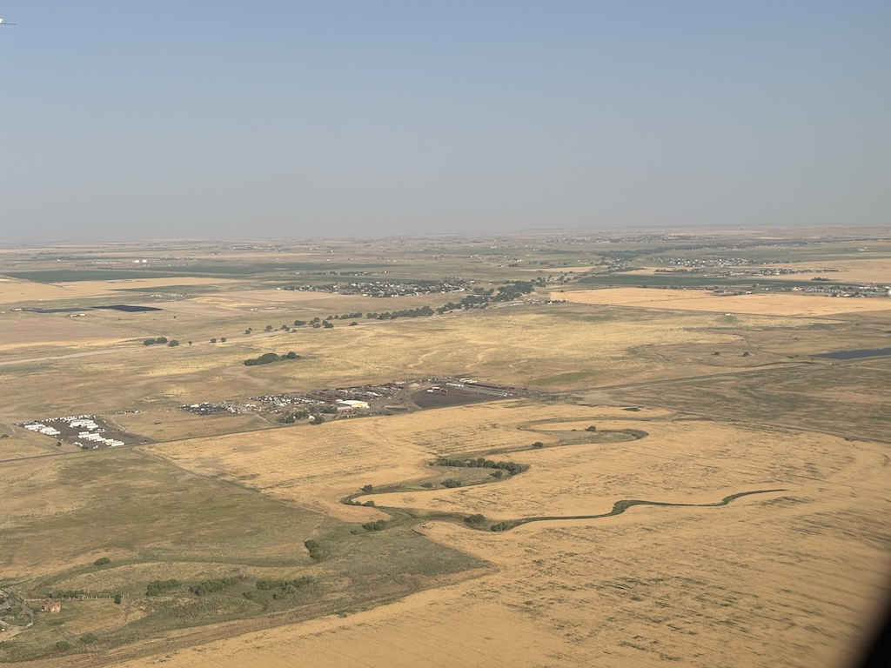Lucky for me I'm not traveling this section alone! Adrian from New York was very keen to join me at some point, claiming he'd never visited the central states. A conversation over a few pints and I was able to persuade him to check flights to Colorado at the same time I was going to be there. The next day he asked if his girlfriend could come too and after I said yes 2 return tickets were booked to land at the same time. We all met up outside the terminal and headed to the rental companies. We didn't get around to sorting a car rental before this point and ended up paying just shy of $1000 to borrow a Chevrolet Malibu for 5 days. Needless to say I was grateful to split the cost 3 ways.
Day 1 was a very simple day. We woke up and walked around the lake in Littleton Denver where we were staying. Very loud cicadas and clouds of flies accompanied our stroll around the water and by 10:00 it was already very hot.
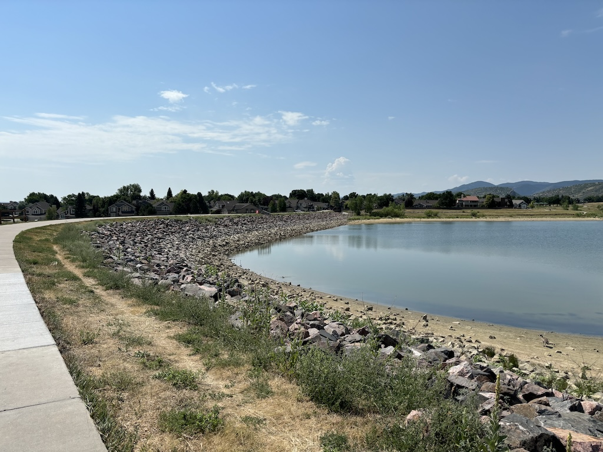
That afternoon we drove into town to watch the Euros final.
After spending about 30 minutes looking for somewhere to park the British Bulldog pub that we correctly thought was showing the game was far too busy to get in.
A queue that would easily outlast the time till kick off strung out the door.
After some further searching we found a bar opposite the baseball field and settled down to watch the game.
As everyone reading this knows, we lost.
Heartbroken from the sad news, Adrian his partner and I walk back into the city center to get a feel for the city.
Denver is a very quiet town during the day.
I would assume this is partially because of the heat, but it may just also be an underdeveloped city center.
This city has the worst case of "just drive everywhere" I've seen so far with some of the widest streets I've seen and nothing going on in the few pedestrianized places.
The next day we went to my first national park! Here's a little bit about the costs associated with going to National Parks in the USA.
It's worth knowing most National Parks charge $25-$35 just to enter the park. Now luckily for me while staying with family in Connecticut I was told about the Annual Parks Pass and bought myself one. With this Pass you can enter any National Park or Federal Reserve for a full year for $80. Some of the busier parks require a timed slot ticket too. Luckily these only ever cost $1 or $2. The evening before I managed to get us a timed entry to Bear Lake Road in the Rocky Mountains National Park. And with my Annual Parks Pass, we only paid $2 for all 3 of us!
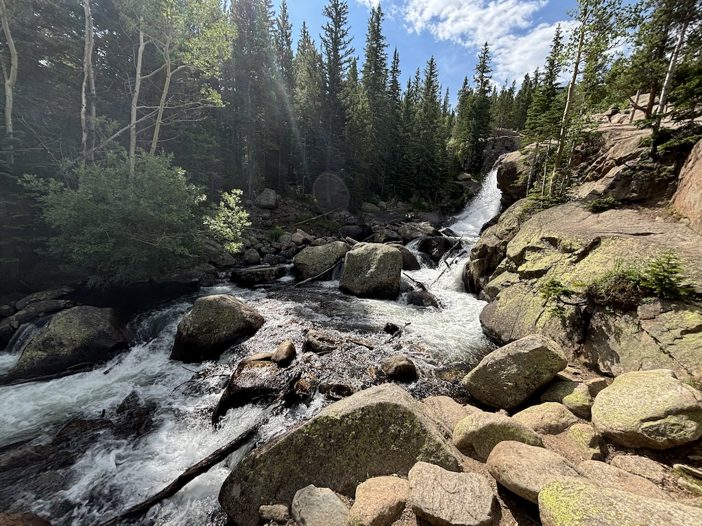The Bear Lake hike is very pretty, but very short loop around Bear Lake. However this lake acts like a trail head for a slew of other routes across the park. We picked a route that would loop past a few lakes, ending at Emerald Lake shown below. The walking was fine, only a little hilly at times and oddly enough we bumped into a couple from Manchester! The only shame was the lack of sun; If it was clearer the view of the lake water below would be far greener. But don't get me wrong, it was still very pretty.
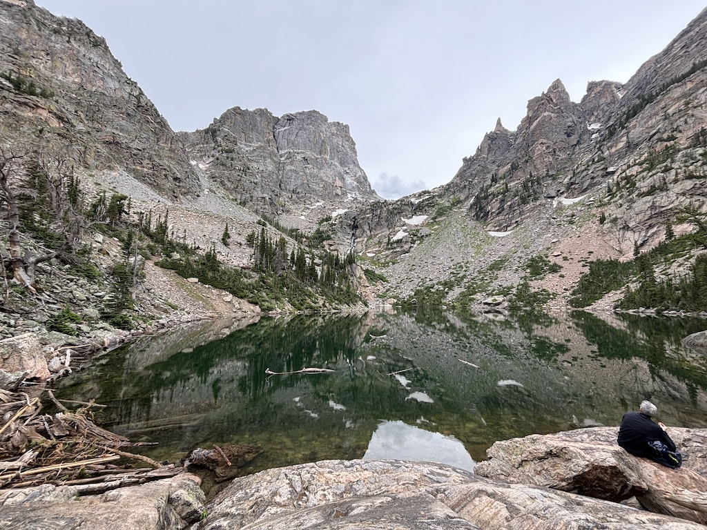On our loop back towards the car we even saw an Elk! As someone who grew up exclusively next to sheep and cows seeing a creature with such a big head piece was incredible.
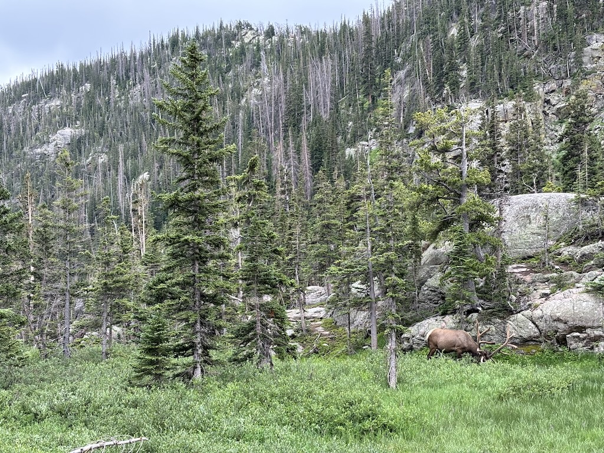After wrapping up the hike we went to Boulder for dinner, but first we had 1 more stop on our day trip. This park is called Chautauqua Park and may have the coolest backdrop to any park I've ever seen. In this photo you can't see the depth of the view, but trust me it's incredible to behold. To me it almost looks like an iceberg, sticking out in huge sharp shapes and loosely wrapped in foliage. I counted 3 photo shoots going on while we were there, friend groups and newly wed couples trying to capture the sunset before it dipped away.
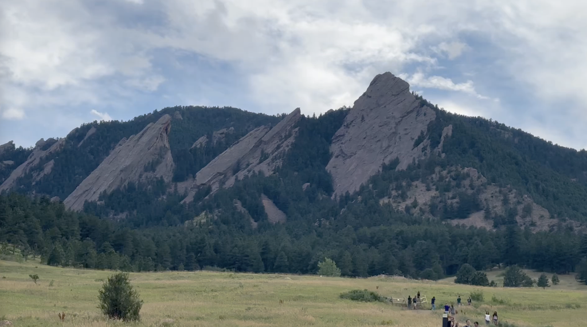The next day we headed south towards the Garden of the Gods, a collection of uniquely shaped huge red rocks. An information board claimed the name came from 2 cowboys riding through. One stated that this would make the best beer garden in the world, a Garden of the Gods. This is completely true and gave us all a good laugh.
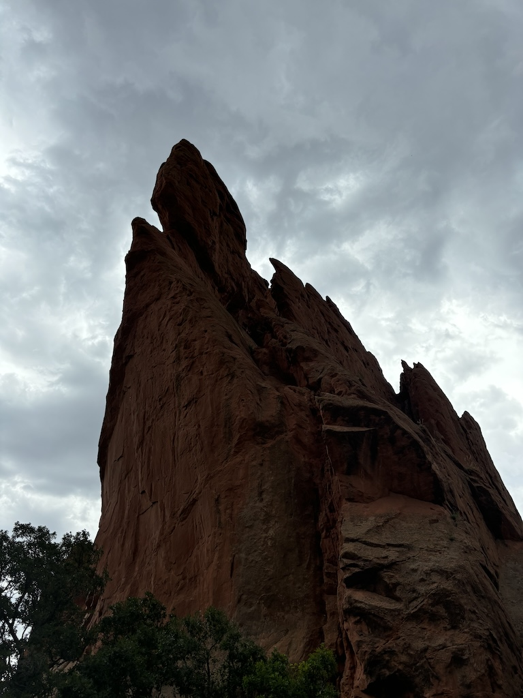That afternoon we went up to Pikes Peak Summit. The entry fee did cost us a little bit not being covered on the park pass but split 3 ways we were happy to pay it. The drive up took a good 40 or so minutes where we got to see the gradual retreat of the trees at the higher altitudes and some unusual beaver looking wildlife (I later learned they were called Yellow Belly Marmots). We were lucky; It was a clear day and the view was awesome. This photo is taken looking back East, in the distance you can see the land flattening out into the great planes. We are stood south of the Rocky National Park here.
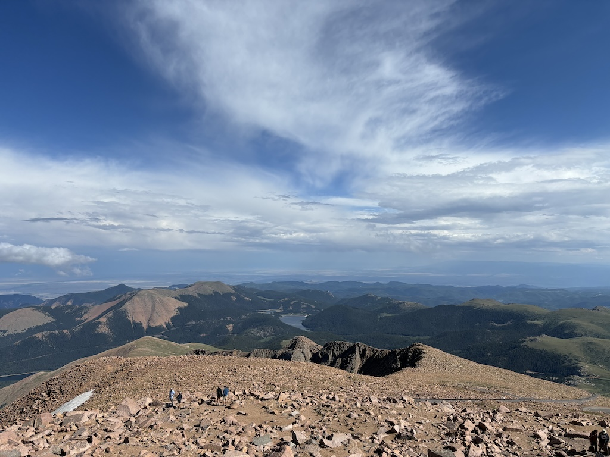Final full day and it's a big one! After getting up early we drove 3 and a half hours out to the Great Sand Dunes. Developed due to previous large lakes forming and drying up in the valley, the sand dunes sit in one corner of a very large bowl. Driving down to them is very strange as they look wildly out of place amongst the rest of the fields and shrubs.
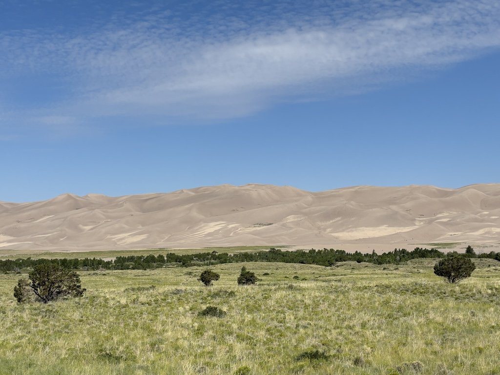We walked up to the sand dunes and after climbing halfway up I began feeling really light headed. Lots of family had beach toys and a lady who left her sledge out let me borrow it for a run down the slope. Adrian and his girlfriend continued on a little further, fairly certain they were going to reach the top dune, but in the end the heat was too much and they joined me back at the bottom. It was really hot. After getting the sand out of our shoes and returning to the car we headed to our last stop, Bishop Castle
This was a spot Adrian found on Reddit as an unorthodox unmissable sight in Colorado. Upon arrival you're greeted with these very large and very scary looking disclaimer signs. They essentially say if you get hurt it's your fault and if you're not happy to take the blame for your actions your trespassing. Nice bit of legal work there to rid the builder Jim Bishop of any responsibility, which considering it's free to explore and entirely his own creation I see as completely fair.
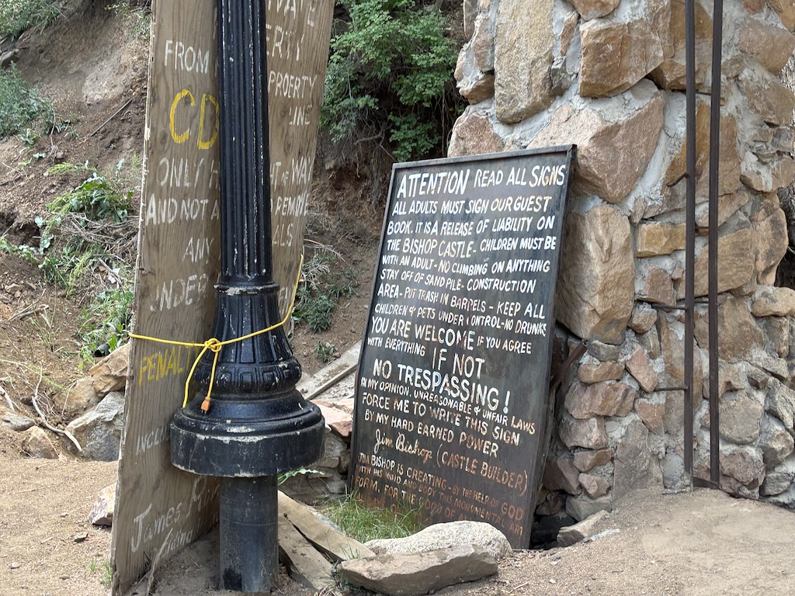This structure was like a big climbing frame. The lower levels strongly resembled a church, with a big meeting hall and some stained glass. But as you climbed the individual spires you were presented with steel walkways and viewpoints that did not feel completely sound. With adrenaline in our blood Adrian and I climbed every bit of this structure and I can gratefully say it held together very well. However with a lack of handrails, random holes in the mesh stairs and wobbly steel viewpoints I wouldn't recommend this one to everyone. Adrian's girlfriend did not join us, and I do not blame her.
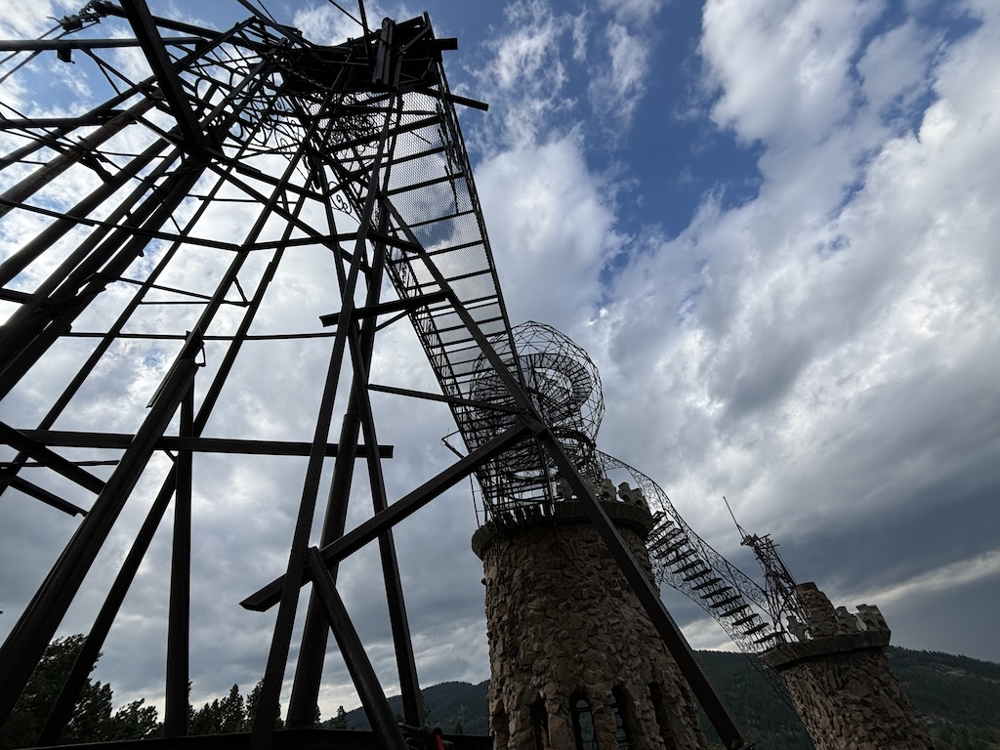On our last day we had a few hours before our flight. One of the most iconic spots just outside of Denver for any music fan is the Red Rock Amphitheatre. The stage shown below has a beautiful view of the city and the plains in the background along with naturally formed walls along the sides of the seating/standing area. A museum attached to the venue lists every gig they've hosted since they've opened which even includes a Beatles gig! They even run large group yoga on Saturday mornings at sunrise.
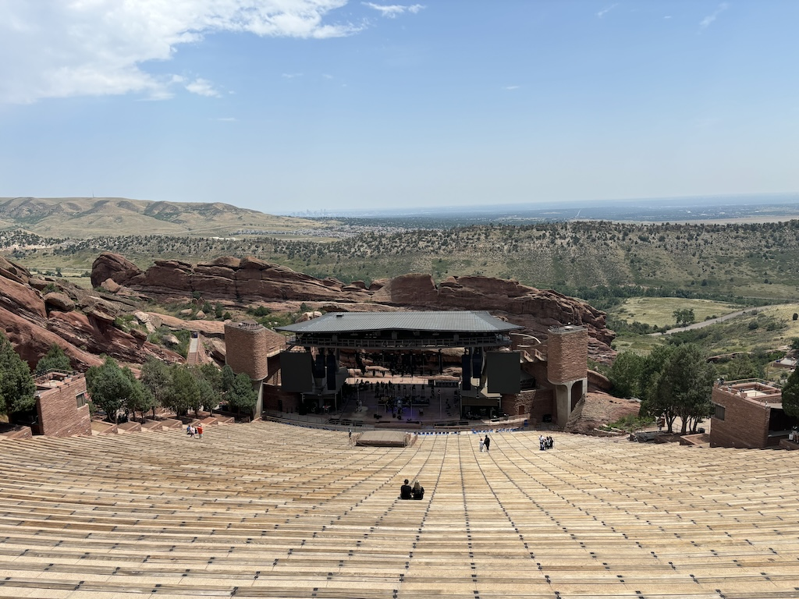
And that is that.
We said our goodbyes and Adrian and his girlfriend flew back to New York.
Meanwhile I sat down and waited for my flight out of Denver...
That's when the airport when into full meltdown.
Find out what happens in the next update!
Navigate home